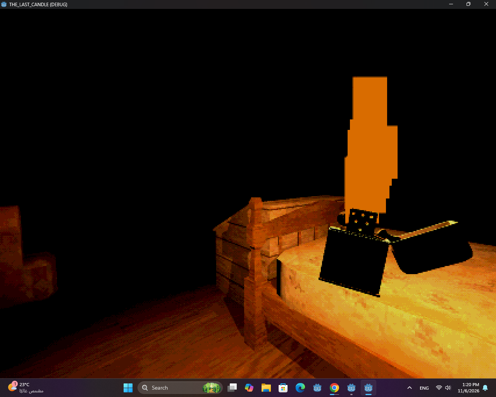
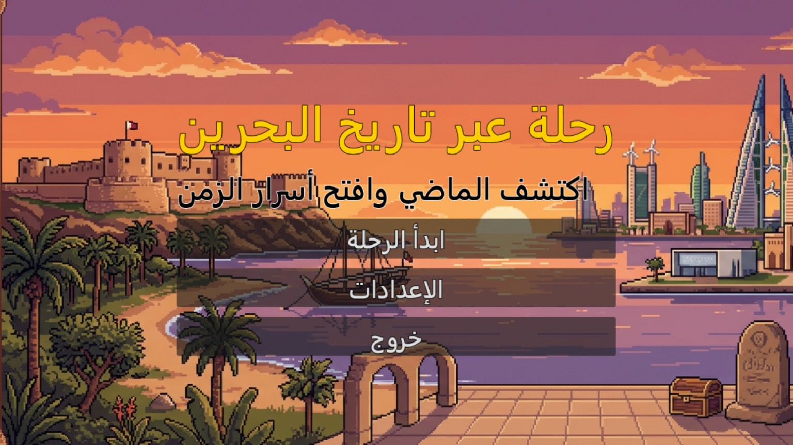
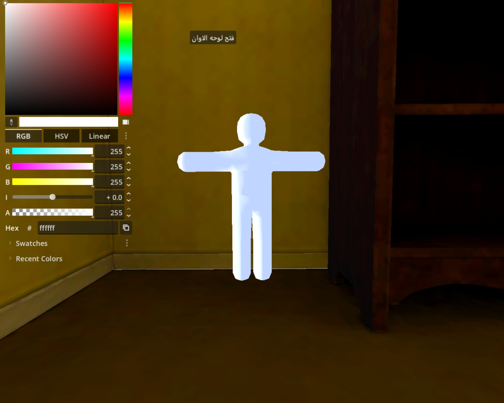

Published · Horror
The 13 Shift: The Flatline
A horror game built with Godot, featuring objectives, missions, horror events, gameplay systems, a main menu and settings.
View on itch.io ↗Siam Studio is an independent game development studio focused on creating atmospheric game experiences, 3D environments and memorable interactive worlds using Godot Engine.
Games and experiments from Siam Studio.
A horror game built with Godot, featuring objectives, missions, horror events, gameplay systems, a main menu and settings.
View on itch.io ↗
A first-person horror project exploring darkness, atmosphere, environmental storytelling and gameplay interactions.

An educational adventure concept built around historical exploration, locations and interactive discoveries.

An independent game prototype inspired by fast-paced arcade action. Currently under development.
Tools and areas developed through hands-on projects.
Independent development, driven by curiosity and experimentation.
For suitable collaboration, mentorship and supervised learning opportunities.